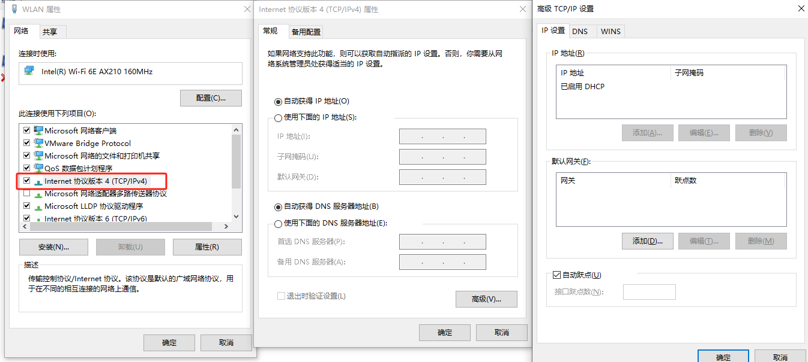
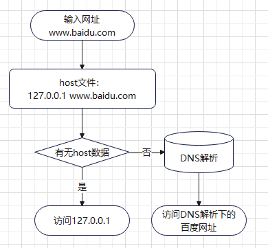

IPv4设置
计算机网络知识
IP
网关
DNS
DNS 服务器
https://blog.csdn.net/qq_39847278/article/details/127596172
hosts文件是一个用于储存计算机网络中各节点信息的计算机文件；host文件所在位置：
1 | C:\Windows\System32\drivers\etc |
作用是将一些常用的网址域名与其对应的IP地址建立一个关联“数据库”，当用户在浏览器中输入一个需要登录的网址时，系统会首先自动从Hosts文件中寻找对应的IP地址。
原理：
1、首先需要明白hosts优先级高于dns域名解析服务器，在hosts文件中把www.baidu.com解析为127.0.0.1,那么浏览器实际访问的是127.0.0.1这个本地地址，并非百度域名对应的IP地址。所以网址是打不开的。
2、比如说有的网站服务器换IP了，但是运营商dns那边还没有相关信息，那么你是无法访问网站的。比方www.123.com把IP地址换成了111.111.111.111。我们该如何修改呢？在hosts文件中填写111.111.111.111 www.123.com那么就可以正常访问了。如果它的IP好记，当然你也可以在浏览器中输入111.111.111.111或者111.111.111.111:端口
3、有些网站有好多服务器分布在不同的地方，不同的地方IP地址也不一样，但是用的是同一个域名。比如www.123.com有两个IP地址，一个在北京IP地址是1.2.3.4， 一个在河南，IP地址是245.63.2.8。如果你在河南这边， 我们可以通过hosts修改来让我们访问www.123.com时锁定在河南服务器。你可以在hosts中写入245.63.2.8 www.123.com
使用：应用场景
1、加快域名解析
对于要经常访问的网站，我们可以通过在Hosts中配置域名和IP的映射关系，这样当我们输入域名计算机就能很快解析出IP，而不用请求网络上的DNS服务器。
2、方便局域网用户
在很多单位的局域网中，会有服务器提供给用户使用。但由于局域网中一般很少架设DNS服务器，访问这些服务要输入IP地址，相当麻烦。在hosts中配置服务器名称 与 IP映射，这样以后访问的时候我们输入这个服务器的名字。
3、屏蔽网站
将一些经常弹广告或垃圾网站，利用hosts把该网站的域名映射到错误的IP或自己计算机的IP即可，我们在Hosts写上以下内容：
127.0.0.1 屏蔽的网站域名 或 0.0.0.0 屏蔽的网站域名
4、顺利连接系统
对于Lotus的服务器和一些数据库服务器，在访问时如果直接输入IP地址那是不能访问的，只能输入服务器名才能访问。那么我们配置好hosts文件，输入服务器名就能顺利连接了。
最后：注意如果实际的IP有变动，也需要手动修改hosts配置